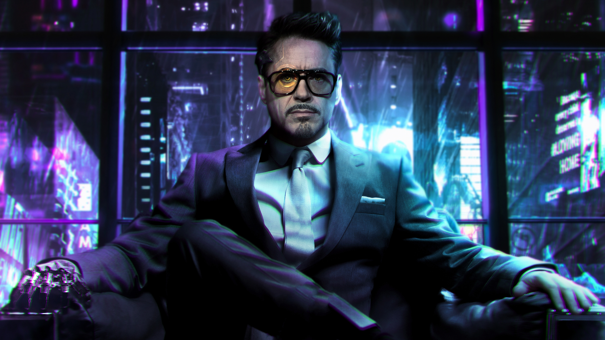

SOBRE MÍ
Una de las extravagancias más grandes que tengo fue adquirir del Gobierno de EEUU la propiedad sobre la famosa Área 51.
Si bien Ojo de Halcón y la Viuda Negra se acabaron convirtiendo en grandes héroes, originalmente fueron mis enemigos. Ojo de Halcón era un artista cirquense que fue seducido por la Viuda (entonces una agente soviética) y engañado para robar mi tecnología. Tras unos cuantos enfrentamientos conmigo, acabaría uniéndose a los Vengadores.
Si quieres conocer mas sobre mi entra al siguiente Link
